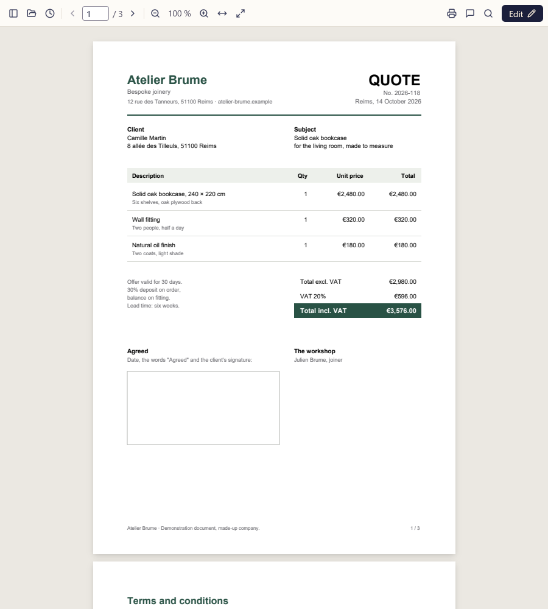
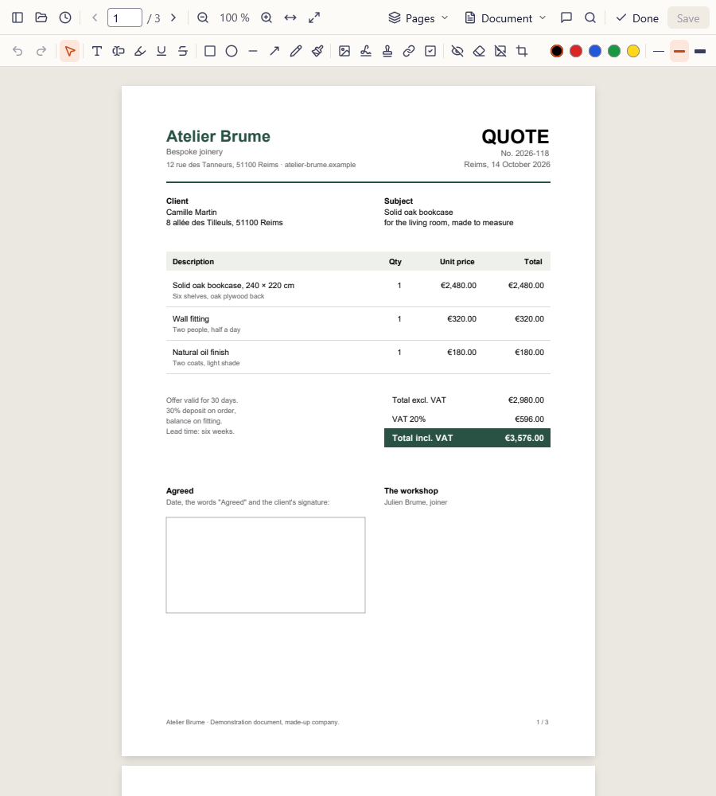

A quote, from inbox to signature.
A joiner emails you a quote as a PDF. Here is what happens in Recto, step by step, without leaving your computer.


-
It opens for reading.
Like a viewer: read, zoom, search for a word, print. Nothing moves by mistake, and a double-click opens a PDF straight from File Explorer.
-
Edit brings out the tools.
A toolbar and the page thumbnails appear. Every tool has its key: T for text, H to highlight, S to sign.
-
Highlight what matters.
The lead time, in yellow. Highlights, underlines, shapes, arrows and notes stay real PDF annotations that other software can read.
-
Sign with your own name.
Type it here: it is written on the quote, in the style and ink you choose. Nothing is sent, not even from this page.
-
Redact before you forward it.
Your address does not need to travel with the quote. Under the black box, the text is removed from the saved file: it can no longer be copied or found by searching.
-
Save, and you are done.
The file is rewritten in one go, never half-written. It stayed on your disk from start to finish: no account, no quota, no connection.